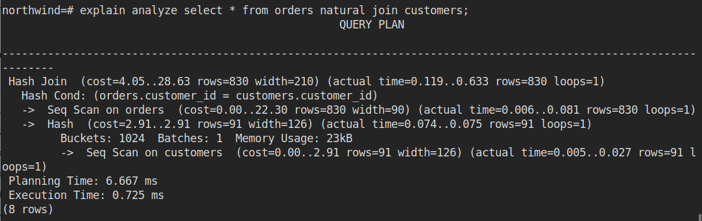

SQL
Lifetime of Query
- Parser : handles the textual form of the statement and verifies whether it is correct or not
- Re-writer : applying the syntactic rules to rewrite the original SQL statement.
- Optimiser : finding the fastest path to the data
- Executor : responsible for effectively going to the storage and retrieving the data from the physical storage.
Optimiser
- Finds all the paths and gets the path with cheapest COST
- LOWEST COST WINS !!
Scan Nodes
- Nodes are available for :
- every operation
- every access methods
- Nodes are stack-able
- Parent Node ( cost = 0.00 ... )
- Child Node
- Child Node
-
Types of Nodes
-
Sequential Scan
- Index Scan, Index Only Scan, Bitmap Index Scan
- Nested Loop, Hash Join and Merge Join
- Gather and Merge parallel nodes
Get All Node Types : SELECT * FROM pg_am;
Sequential Scan
Performs a sequential scan on the whole table.

Index Scan
- Index is used to access Data
- Types
- Index scan
- Index only scan
- Bitmap Index

Index only scan

Hash Join
- Used when joining tables
- Joins preformed on 2 table at a time, if more tables are joined together, the output at one join in treated as input to a subsequent join
- When joining large number of tables, the genetic query optimiser settings may effect what combinations of joins are considered.
Types
- Inner Table : Build a hash table from the inner table, keyed by the join key.
- Outer Table : then scan the outer table checking if a corresponding value is present
Memory Size ( used by sort operation and hash table ) : 4 MB

****